whaddup, i'm seka — i draw, build, and question things until they become better things, or worse things. that happens too, a lot tbh. it gets there eventually tho. i do all that rn @CashApp as a design researcher.
still interested? lol, cool. hmu —